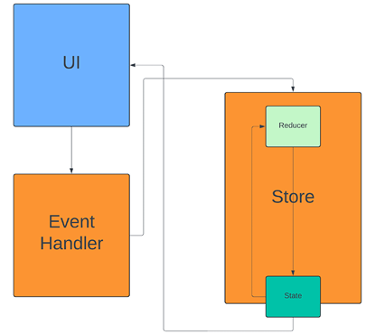
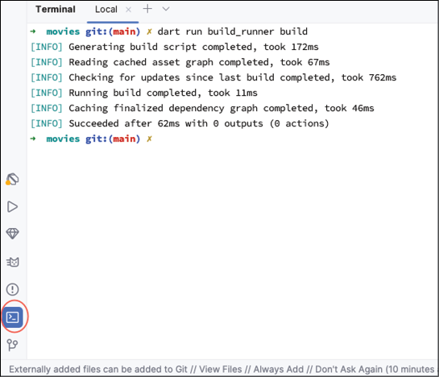
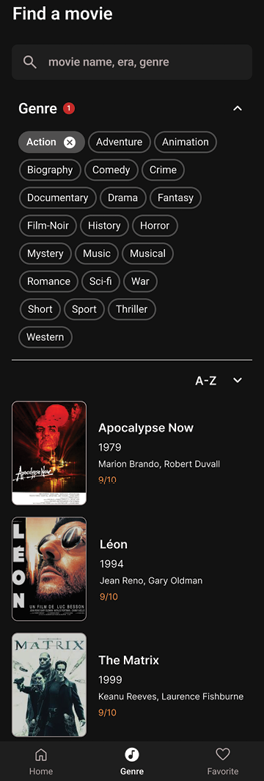
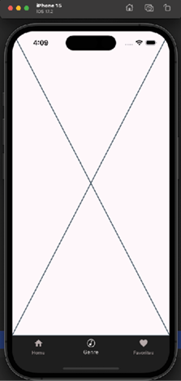
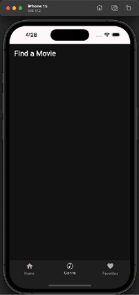
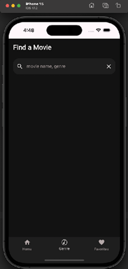
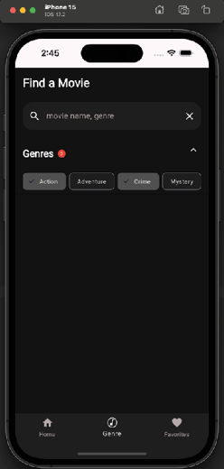
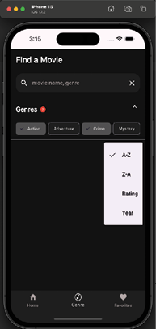
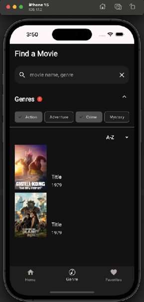

CHAPTER 6 State Management Fundamentals
Introduction
In this chapter, you will learn all about state management in Flutter. State management is an important topic in Flutter and must be understood to write Flutter apps properly. You will learn about the built-in state management of Flutter as well as how to use third-party packages for handling global states.
Structure
The chapter covers the following topics:
- Understanding state in Flutter
- Local versus app state
- Built-in state
- State management with packages
- Immutable state
- Riverpod
- Genre screen
Understanding state in Flutter
State is any data used in an app that can change over time and update the UI of the app. In Flutter, the UI is designed to update whenever any state changes.
Remember that there are two types of widgets: Stateless and stateful.
Stateless widgets are given data to display but do not change themselves, while stateful widgets contain their own state and can update it to update the widget. Stateful widgets use the setState method to signal the Flutter system that it needs to be redrawn. Use the setState method as low as possible in the widget tree; otherwise, the whole screen will be redrawn. In other words, if you have a widget in the middle of the screen, if that widget is stateful, it can just redraw itself when its state changes. This is also an example of why you want to put your widgets into their own classes. This will allow the Flutter system to only draw those items that have changed.
Local versus app state
Local state is data specific to a single widget and typically managed within that widget's class. That class is a type of StatefulWidget. For example, if you use a FilterChip widget, you will need to save the selection state of the widget. This needs to be saved in a StatefulWidget.
App state is data that is shared between multiple parts of your app, like user preferences, authentication status, or shopping cart contents. Various state management techniques are available for handling app state. We will use the Riverpod package to allow the app-wide state to be shared among all of the screens. If you have a networking package, you do not want to re-create it on every screen. Using a package to create the library once and share it among screens is very helpful.
Built-in State
If you look at MainApp in main.dart, you can see that it is made up of a StatefulWidget and a state. The State class is where you will store your data and build your UI. When the widget needs to be rebuilt, Flutter will create a new widget but keep a copy of the state so that your data is not lost. The State class has a widget parameter that lets you access its parent widget. It also keeps track of its lifecycle. The state class has a few important methods: initState (called once to initialize data), destroy (free up resources when done), setState (notify the system that the widget needs to be rebuilt), and build (return a widget to display).
InheritedWidget
InheritedWidget is a Flutter widget that passes state down the widget tree without sending it through parameters. It stores the state in the BuildContext. Typical subclasses of this class have a static of method, that when passed in a context, will return that value. The following is an example of a widget that implements the InheritedWidget method:
static InheritedWidgetSubclass of(BuildContext context) {
final result = context.dependOnInheritedWidgetOfExactType<InheritedWidgetSubclass>();
return result!;
}
The dependOnInheritedWidgetOfExactType method retrieves the stored value. This widget is not used much.
State management with packages
In Flutter, you can just use stateful widgets to manage the state, but there are many packages out there that provide a lot of functionality. The following are a few that will be covered:
- Provider
- Riverpod
- Business Logic Component (BLoC)
- GetIt
- Redux
- MobX
Why would you want to use another package? If you have data that you want to share among all the widgets below the main widget, you would normally have to pass that data down the tree via parameters. This is known as lifting the state. A design pattern for moving the ownership of state as high as possible. This can be difficult if you have more than one parameter. These packages provide a way to set data in one location and retrieve it anywhere in a widget tree. No more parameters.
Provider
Provider is a third-party package from Google but is in maintenance mode. It was originally developed by the author of Riverpod (who recommends using Riverpod). It is described as a wrapper around InheritedWidget. InheritedWidget is a Flutter widget that is useful for allowing child widgets to access state that has been defined higher up, without passing that state down via parameters. It uses the BuildContext dependOnInheritedWidgetOfExactType method to find instances.
The Provider package has several classes that provide classes that can be used by widgets lower down in the tree. The basic class is the Provider class. This class has a create parameter where you would create your class once and a child parameter for your child widget. An example is:
Provider(
create: (_) => MyModel(),
child: ...,
)
This creates the MyModel class once and returns a widget in the child parameter.
Another provider is called ChangeNotifierProvider and is useful for updating the widget when its value changes. This class has a value parameter instead of a create parameter. It uses the built-in Flutter ChangeNotifier class. An example would be:
class Counter extends ChangeNotifier {
int _counter = 0;
int get counter => _counter;
void increment() {
_counter++;
notifyListeners();
}
void decrement() {
_counter--;
notifyListeners();
}
}
This takes the sample Flutter apps counter variable and puts it in a class that holds that state. Whenever the increment or decrement methods are called, the counter gets modified and listeners are notified of the change. You would use the ChangeNotifierProvider as follows:
ChangeNotifierProvider(
create: (context) => Counter(),
child: const MyApp(),
),
If you have multiple providers, the provider has the MultiProvider widget, which takes an array of providers.
BloC
BLoC is a package designed to make it easy to implement this design pattern. The idea behind this pattern is to separate the UI from the business logic. The UI takes actions from a user that are sent to a cubit (a class that stores state). This cubit takes that action, converts it to a new state, and then sends that state out for the UI to consume. BloC is a nice pattern but requires a lot of code to implement. You can find more information about BloC at https://pub.dev/packages/bloc.
GetIt
GetIt is a service locator package (that is, dependency injection). While GetIt is not a state management solution, it provides dependency injection functionality like other packages. You would use it as follows:
final getIt = GetIt.instance;
getIt.registerSingleton<AppModel>(AppModel());
Then, to use it in the UI, apply the following code:
MaterialButton(
child: Text("Update"),
onPressed: getIt<AppModel>().update // given that your AppModel has a method update
),
You can find GetIt at https://pub.dev/packages/get_it.
Redux
Redux comes in two packages: Redux for Dart and flutter_redux for Flutter (that uses Redux).
Redux has three principles:
- Single source of truth: Your state is stored in an object tree in one place.
- State is read-only: State objects are immutable and can only be changed by actions that create a new state.
- Changes are made with pure reducers: These functions take a state and an action and produce a new state.
In the flutter_redux package, there is a StoreProvider that takes a store you have created and a child widget. There is a StoreConnector that provides a converter function and a builder that has a callback. That callback will dispatch an action to the store. The flow is as follows:

Figure 6.1: Redux data flow
MobX
MobX is a state management library that uses the concepts of observables, actions, and reactions. It is like Redux. Actions are like the reducer, and observable is where you store your data. It has a code generator that can create some of the boilerplate code for you. You can find MobX at https://pub.dev/packages/mobx. You would mark a value with the @observable annotation and an action with @action on a function. A class would use the store mixin, and the generator would create the store class needed in your widget tree. You can use the Observer widget to listen to changes in your store.
Immutable state
Many libraries talk about the importance of immutability. The reason is that if you have state that can be changed by any class, you will eventually encounter bugs where one class changes the state and another class has a different instance of that state. Which one is correct? Will different parts of your app behave differently, or will it just crash? One of the downsides of a class that cannot have its data changed is that you have to create a new copy each time to update its state. There is a library that helps with that, and we will cover that library in a later chapter.
Riverpod
Riverpod is another third-party package written by the same author as Provider. Riverpod is an anagram of provider. The author has learned from his experience with the provider and has created an excellent package. You can find more information about Riverpod at https://riverpod.dev/. We will be using this package for the movies app. It is like Provider but also has a generator so that you can use its annotation capabilities to generate code. Riverpod has several custom widgets that you will subclass to give you access to the provided data. These classes provide easy access to all the shared resources you have created. Another advantage is that you do not have to define your resources in the same file as your UI. Riverpod also handles asynchronous requests and can cache the result.
Riverpod is defined as a reactive caching framework for Flutter/Dart. It can handle asynchronous calling with error handling. Riverpod uses reference classes that allow you to listen for changes in data. The main reference class is WidgetRef. This class has several important methods:
- watch(provider): Given a provider, update the widget when the provider changes.
- listen(provider): Listen to changes in a provider and perform an action.
- read(provider): Used to get the value of the provider and not listen to changes.
Both the watch and listen methods should be used inside of the build method. Read is usually used for other methods when you need to get the value of the provider and perform some action.
We will use the Riverpod package for dependency injection and, in part, for state management. To add Riverpod, you need to add several packages. Open pubspec.yaml and add the following:
flutter_riverpod: ^3.2.1
# the annotation package containing @riverpod
riverpod_annotation: ^4.0.2
Next, add two packages under the dev_dependencies section:
build_runner: ^2.11.1
riverpod_generator: ^4.0.3
riverpod_lint: ^3.1.3
Comment out the overrides:
#dependency_overrides:
# analyzer: 5.13.0
Run flutter pub get.
Here are what the packages are for:
flutter_riverpod: Main Riverpod package.riverpod_annotation: Provides annotation used by the code generator.build_runner: This is a Flutter package used by other packages to create source code for you. Riverpod generator uses this to create Riverpod files.riverpod_generator: Package used to generate Riverpod code.riverpod_lint: Linter that checks for Riverpod issues.
In order to use Riverpod, you will need to wrap the MainApp in a ProviderScope. The ProviderScope stores the state of all providers. Open up main.dart and change runApp to:
runApp(const ProviderScope(child: MainApp()));
Then, import the Riverpod package. To use Riverpod, you need to define some providers. Inside the lib directory, create a new file named providers.dart. We will be moving the images list into the providers.dart file. Add:
import 'package:riverpod_annotation/riverpod_annotation.dart';
part 'providers.g.dart';
@riverpod
List<String> movieImages(Ref ref) => [
// TODO add Images
];
This imports the riverpod_anotation file and uses the part keyword. This keyword will import the providers.g.dart file. This does not exist yet and will be generated by Riverpod. Next replace the TODO with:
'http://image.tmdb.org/t/p/w780/z1p34vh7dEOnLDmyCrlUVLuoDzd.jpg',
'http://image.tmdb.org/t/p/w780/gKkl37BQuKTanygYQG1pyYgLVgf.jpg',
'http://image.tmdb.org/t/p/w780/4xJd3uwtL1vCuZgEfEc8JXI9Uyx.jpg',
'http://image.tmdb.org/t/p/w780/uuA01PTtPombRPvL9dvsBqOBJWm.jpg',
'http://image.tmdb.org/t/p/w780/H6vke7zGiuLsz4v4RPeReb9rsv.jpg',
'http://image.tmdb.org/t/p/w780/e1J2oNzSBdou01sUvriVuoYp0pJ.jpg',
'http://image.tmdb.org/t/p/w780/hu40Uxp9WtpL34jv3zyWLb5zEVY.jpg',
'http://image.tmdb.org/t/p/w780/pKaA8VvfkNfEMUPMiiuL5qSPQYy.jpg',
'http://image.tmdb.org/t/p/w780/zK2sFxZcelHJRPVr242rxy5VK4T.jpg',
'http://image.tmdb.org/t/p/w780/7qxG0zyt29BI0IzFDfsps62kbQi.jpg',
'http://image.tmdb.org/t/p/w780/8Gxv8gSFCU0XGDykEGv7zR1n2ua.jpg',
'http://image.tmdb.org/t/p/w780/zDi2U7WYkdIoGYHcYbM9X5yReVD.jpg',
'http://image.tmdb.org/t/p/w780/cxevDYdeFkiixRShbObdwAHBZry.jpg',
'http://image.tmdb.org/t/p/w780/uXUs1fwSuE06LgYETw2mi4JxQvc.jpg',
'http://image.tmdb.org/t/p/w780/fdZpvODTX5wwkD0ikZNaClE4AoW.jpg',
'http://image.tmdb.org/t/p/w780/d5NXSklXo0qyIYkgV94XAgMIckC.jpg',
'http://image.tmdb.org/t/p/w780/sh7Rg8Er3tFcN9BpKIPOMvALgZd.jpg',
'http://image.tmdb.org/t/p/w780/sHJ2OIgpcpSmhqXkuSWxZ3nwg1S.jpg',
'http://image.tmdb.org/t/p/w780/upKD8UbH8vQ798aMWgwMxV8t4yk.jpg',
'http://image.tmdb.org/t/p/w780/vfrQk5IPloGg1v9Rzbh2Eg3VGyM.jpg',
This is the list of all movie images. Now remove the list from home_screen_image.dart. In order to generate the providers.g.dart file, you will use Flutter's build_runner app. Open the terminal in Android Studio and run:
dart run build_runner build
Your output will look like this:

Figure 6.2: build_runner
Now that the provider file is ready, it is time to fix the errors that show up. Inside of home_screen_image.dart, add the flutter_riverpod import:
import 'package:flutter_riverpod/flutter_riverpod.dart';
and then change the type of HomeScreenImage from StatelessWidget to ConsumerWidget. This is a Riverpod stateless widget. Next change the build method to:
Widget build(BuildContext context, WidgetRef ref) {
This adds the WidgetRef parameter. Right after this add:
final images = ref.watch(movieImagesProvider);
This uses the WidgetRef to read the provider created by Riverpod and return the list of movie strings. Do the same thing with the home screen and VerticalMovieList. You should not see any errors. Hot reload and make sure everything works.
Genre screen
It is time to create the Genre screen. This screen will allow users to search for a movie by genre or title. Here is the design of the screen:

Figure 6.3: Genre design
Start by creating a new folder in the ui/screens directory, named genres. Inside that folder, create a new dart file named genre_screen.dart. Add the following:
import 'package:flutter/material.dart';
import 'package:flutter_riverpod/flutter_riverpod.dart';
class GenreScreen extends ConsumerStatefulWidget {
const GenreScreen({super.key});
@override
ConsumerState<GenreScreen> createState() => _GenreScreenState();
}
class _GenreScreenState extends ConsumerState<GenreScreen> {
@override
Widget build(BuildContext context) {
return Placeholder();
}
}
Notice that this class uses a new ConsumerStatefulWidget class from the Riverpod package. This widget gives us access to provider references that allow us to retrieve our shared classes. _GenreScreenState extends ConsumerState, which is another Riverpod class. Open the main_screen and replace the second placeholder with the GenreScreen. Now run the app and click on the Genre screen. It will look the same, but you can now work on it while it shows the following:

Figure 6.4: Genre screen
Inside of GenreScreen, replace the Placerholder() with the following:
// 1
return SafeArea(
// 2
child: Container(
color: screenBackground,
// 3
child: Column(
mainAxisSize: MainAxisSize.max,
mainAxisAlignment: MainAxisAlignment.start,
crossAxisAlignment: CrossAxisAlignment.start,
children: [
// 4
Row(
mainAxisSize: MainAxisSize.max,
children: [
Padding(
padding: const EdgeInsets.fromLTRB(16, 16.0, 0.0, 24.0),
child: Text(
'Find a Movie',
style: Theme.of(context).textTheme.titleLarge
),
),
],
),
]
),
),
);
Here is an explanation of the code:
- Use SafeArea to draw below the status area.
- Use a Container to show our background color.
- Use a Column set at max height to show a list of items.
- Use a Row to display items across the screen.
As we build this screen, we will create code that will change later as we add more items. Hot reload (or hot restart if that does not work), and you should see the following:

Figure 6.5: Genre with title
This is a good way to build a screen. Slowly add one item at a time to make sure it works by performing a hot reload. If you try to build the whole thing at once and it does not work, you cannot be sure what is causing the problem.
Next, we need a search text field. Add a new file called genre_search_row.dart in the genres folder. Start with the following:
import 'package:flutter/material.dart';
import 'package:flutter_riverpod/flutter_riverpod.dart';
import 'package:movies/ui/theme/theme.dart';
typedef OnSearch = void Function(String searchString);
class GenreSearchRow extends ConsumerStatefulWidget {
final OnSearch onSearch;
const GenreSearchRow(this.onSearch, {super.key});
@override
ConsumerState<GenreSearchRow> createState() => _GenreSearchRowState();
}
class _GenreSearchRowState extends ConsumerState<GenreSearchRow> {
// TODO: Add variables
// TODO: Add init and dispose
@override
Widget build(BuildContext context) {
return Row(mainAxisSize: MainAxisSize.max, children: [
// TODO: Add TextField
]);
}
}
The only unique item here is the OnSearch typedef. This defines a function that will receive a searchString.
-
When the user clicks on the search icon or hits the done button on the keyboard, a
searchStringwill be sent to the owner of theonSearchfunction. Replace the firstTODOwith the following:late TextEditingController movieTextController; final FocusNode textFocusNode = FocusNode();This creates a
TextEditingControllerfor controlling the text the user inputs. You can learn more about it in the Flutter documentation.The
FocusNodeis an easy way for the user to start typing in the text field. You can learn more about it in the Flutter documentation. -
Next, create the
initStateanddisposemethods. These are needed as a one-time initialization and disposal. Replace the secondTODOwith the following:@override void initState() { super.initState(); movieTextController = TextEditingController(text: ''); } @override void dispose() { movieTextController.dispose(); super.dispose(); }Whenever you use a text controller, you need to dispose of it in the dispose method.
-
The
TextFieldwidget has a lot of options, and this one will use lots, so we will add them slowly. Replace// TODO: Add TextFieldwith:Expanded( child: Padding( padding: const EdgeInsets.only(left: 16.0, right: 16.0), child: TextField( style: const TextStyle(color: Colors.white), focusNode: textFocusNode, keyboardType: TextInputType.text, // TODO Add More ), ), )This just wraps the
TextFieldwidget with some padding and by using theExpandedwidget, fill the row. The input type is text. -
Replace the
TODOwith the following code:enableSuggestions: false, autofocus: false, // 1 onSubmitted: (value) { widget.onSearch(value); }, // 2 controller: movieTextController, autocorrect: false, // 3 decoration: InputDecoration( filled: true, focusColor: searchBarBackground, focusedBorder: null, enabledBorder: null, fillColor: searchBarBackground, border: OutlineInputBorder( borderRadius: BorderRadius.circular(20), borderSide: BorderSide.none, ), hintText: 'movie name, genre', hintStyle: body1Regular.copyWith(color: posterBorder), // 4 suffixIcon: IconButton( onPressed: () { movieTextController.clear(); }, icon: const Icon(Icons.close, color: Colors.white), // Close icon ), // 5 prefixIcon: IconButton( icon: const Icon(Icons.search, color: Colors.white), onPressed: () { widget.onSearch(movieTextController.text); }, ), ), -
The steps are as follows:
- When the user hits the return key, call the onSearch method with the current search text.
- Use the text controller we created earlier.
- Create an InputDecoration that creates a nice rounded rectangle around the text field.
- Create a clear icon at the end so that the text can be reset.
- Create a search icon that will call the onSearch method.
-
Back in
genre_screen.dart, add the following after the row:GenreSearchRow((searchString) { }),
Perform a hot reload. You should see the following screen:

Figure 6.6: Search Field
Genre section
Now, we will examine one of the most complicated, but exciting sections. This section will show a list of genres for the user to choose when they search.
-
Create a new file named
genre_section.dartin thegenresfolder. Add the following code:import 'package:collection/collection.dart'; import 'package:flutter/material.dart'; import 'package:flutter_riverpod/flutter_riverpod.dart'; import 'package:movies/ui/theme/theme.dart'; // 1 class GenreState { final String genre; final bool isSelected; GenreState({required this.genre, required this.isSelected}); } // 2 typedef OnGenresSelected = void Function(List<GenreState>); typedef OnGenresExpanded = void Function(bool); // 3 class GenreSection extends ConsumerStatefulWidget { final bool isExpanded; final List<GenreState> genreStates; final OnGenresExpanded onGenresExpanded; final OnGenresSelected onGenresSelected; const GenreSection({ required this.genreStates, required this.isExpanded, required this.onGenresExpanded, required this.onGenresSelected, super.key }); @override ConsumerState<GenreSection> createState() => _GenreSectionState(); } class _GenreSectionState extends ConsumerState<GenreSection> { late List<GenreState> _genreStates; @override void initState() { super.initState(); _genreStates = widget.genreStates; } @override Widget build(BuildContext context) { return Placeholder(); } }GenreStateis a class that holds the name of the genre and whether it is selected.- These two functions are for when the genre is selected and the section is expanded.
GenreSectionis the widget. It is passed in the fields needed to display itself.
-
Now add the following method below
build:List<Widget> getGenreChips() { return _genreStates.mapIndexed((index, genreState) { return FilterChip( key: ValueKey(genreState.genre), backgroundColor: searchBarBackground, selectedColor: buttonGrey, label: AutoSizeText( genreState.genre, style: Theme.of(context).textTheme.labelSmall ), selected: genreState.isSelected, onSelected: (selected) { setState( () { _genreStates[index] = GenreState( genre: genreState.genre, isSelected: selected); widget.onGenresSelected(getSelectedGenres()); }, ); }, ); }).toList(); }This method will return a list of
FilterChip(a Flutter widget).FilterChiphas checkmarks next to them if they are selected. -
Next, add the following:
List<GenreState> getSelectedGenres() { return _genreStates.where((e) => e.isSelected).toList(); } int totalSelected() { return getSelectedGenres().length; }The first method will return a list of genres that have been selected. The last method just returns a total of the selected genres lengths.
-
Now replace the
Placeholderwidget with:final genreChips = getGenreChips(); return ExpansionPanelList( expandIconColor: Colors.white, expansionCallback: (int index, bool expanded) { setState(() { widget.onGenresExpanded(expanded); }); }, children: [ ExpansionPanel( isExpanded: widget.isExpanded, backgroundColor: screenBackground, headerBuilder: (BuildContext context, bool isExpanded) { // TODO : Add Chips } ) ], );This code will call the
getGenreChipsmethod to get a list of chips. TheExpansionPanelListwidget will expand and contract when the user selects an arrow. TheexpansionCallbackwill be called, and we will callonGenresExpandedwith the value to have the section updated. -
The
ExpansionPanelis where the chips will live. Replace theTODOwith:headerBuilder: (BuildContext context, bool isExpanded) { return Padding( padding: const EdgeInsets.only(left: 16.0, top: 16), child: Row( children: [ // 1 Text('Genres', style: Theme.of(context).textTheme.headlineLarge), const SizedBox(width: 8), // 2 Container( width: 16, height: 16, decoration: const BoxDecoration( shape: BoxShape.circle, color: Colors.red, ), child: Center( // Center the text child: Text( totalSelected().toString(), style: verySmallText, ), ), ) ], ), ); }, body: Wrap(spacing: 16.0, runSpacing: 4.0, children: genreChips),This will show the list of Genre chips that the user can select to choose which genres they are interested in.
- Genre title: Create the Title for the screen.
- A small red circle with a number of selected genres. This will be the count of selected genres.
- Chips. This is the list of chips to display.
-
Back in
GenreScreen, add the following after the genres list:1. Init the data, After 'expandedNotifier' add:final expandedNotifier = ValueNotifier<bool>(false);@override void initState() { super.initState(); genres = [ GenreState(genre: 'Action', isSelected: false), GenreState(genre: 'Adventure', isSelected: false), GenreState(genre: 'Crime', isSelected: false), GenreState(genre: 'Mystery', isSelected: false), ]; } -
After
GenreSearchRowadd:ValueListenableBuilder<bool>( valueListenable: expandedNotifier, // bool value 监听 expandedNotifier.value 的变化 builder: (BuildContext context, bool value, Widget? child) { return GenreSection( genreStates: genres, isExpanded: value, onGenresExpanded: (expanded) { expandedNotifier.value = expanded; }, onGenresSelected: (List<GenreState> states) {}, ); } ), -
ValueListenableBuilderis another Flutter widget that will rebuild just its child when its value changes. This will change when the user expands theGenressection. Do a hot restart (not reload). You should see the following screen:

Figure 6.7: Genres section
Sorting
The next item is a divider and a sort drop-down. The steps to add it are as follows:
-
Inside of
GenreScreen, add a divider after theValueListenableBuilder:const Divider(), -
Create a new folder under the
libfolder namedutils. Add a new file namedutils.dartthen add the following code:import 'package:flutter/material.dart'; Widget addVerticalSpace(double amount) { return SizedBox(height: amount); } Widget addHorizontalSpace(double amount) { return SizedBox(width: amount); } enum Sorting { aToz(name: 'A-Z'), zToa(name: 'Z-A'), rating(name: 'Rating'), year(name: 'Year'); const Sorting({required this.name}); final String name; }This adds two methods that just return a
SizedBoxwidget. This is a helper method. The sorting enum will display its name in a drop-down. -
Now add a new file named
sort_picker.dartin thegenresfolder. Add the following:import 'package:collection/collection.dart'; import 'package:flutter/material.dart'; import 'package:flutter_riverpod/flutter_riverpod.dart'; import 'package:movies/utils/utils.dart'; typedef OnSortSelected = void Function(Sorting); class SortPicker extends ConsumerStatefulWidget { final OnSortSelected onSortSelected; const SortPicker({required this.onSortSelected, super.key}); @override ConsumerState<SortPicker> createState() => _SortPickerState(); } class _SortPickerState extends ConsumerState<SortPicker> { Sorting selectedSort = Sorting.aToz; @override Widget build(BuildContext context) { return Placeholder(); } }The
OnSortSelectedtypedef is used to return to the caller the user selected sort value. This sets up theSortPickerclass and has a variable for managing the selected sort. Now replacePlaceholderwith:return Row( children: [ const Spacer(), Text( selectedSort.name, style: Theme.of(context).textTheme.labelLarge, ), // 1 addHorizontalSpace(16), // 2 PopupMenuButton<Sorting>( icon: const Icon( Icons.arrow_drop_down, color: Colors.white, ), // 3 onSelected: (Sorting value) { widget.onSortSelected(value); }, itemBuilder: (BuildContext context) { // 4 return Sorting.values .mapIndexed<PopupMenuItem<Sorting>>((int index, Sorting sort) { // 5 return CheckedPopupMenuItem<Sorting>( checked: selectedSort == sort, value: sort, onTap: () { setState(() { selectedSort = sort; }); }, child: Text(sort.name), ); }).toList(); }, ), ], );- add
HorizontalSpaceis a utility method for adding a bit of space. PopupMenuButtonis a Flutter widget for showing a popup menu.- When an item is selected, call the callback.
- Use the
mapIndexedcollection method to return a widget for each sorting item. CheckedPopupMenuItemis another Flutter widget that has a checkbox when selected.
mapIndexedis a collection method that is a helpful way to iterate over all items in a list and provide an index. By going through theSortingenum values, we create a checked popup for each item. When the user selects a sorting popup menu, the selected sort is set and the widget is rebuilt. Note that you need to calltoListonmapIndexedin order for this to work. - add
-
Hot restart. The screen will be as follows:

Figure 6.8: Sort picker
Movie list
Now, we will add the section for the list of movies shown after a search. Note that we will not be using live data until the networking chapter.
The movie list will be a widget that can be reused. For reusable widgets, create a widgets folder under the lib/ui folder. Then, create a new file named movie_row.dart. This class will display a row with a movie image, title, and release date (The title and release date will be added when we have actual movie data in later chapters).
The steps are as follows:
-
Add the following code:
import 'package:auto_size_text/auto_size_text.dart'; import 'package:cached_network_image/cached_network_image.dart'; import 'package:flutter/material.dart'; import 'package:movies/utils/utils.dart'; class MovieRow extends StatelessWidget { final String movie; const MovieRow({super.key, required this.movie}); @override Widget build(BuildContext context) { // TODO } }We will use the
AutoSizeTextwidget to have long titles fit properly. Now replaceTODOwith:if (movie.isNotEmpty) { // 1 return GestureDetector( onTap: () => {}, child: Padding( padding: const EdgeInsets.all(8.0), child: SizedBox( height: 140, // 2 child: Row( mainAxisSize: MainAxisSize.max, children: [ addHorizontalSpace(16), // 3 SizedBox( height: 142, width: 100, // 4 child: CachedNetworkImage( imageUrl: movie, alignment: Alignment.topCenter, fit: BoxFit.cover, height: 142, width: 100, ), ), addHorizontalSpace(16), // 5 Column( mainAxisSize: MainAxisSize.min, mainAxisAlignment: MainAxisAlignment.end, crossAxisAlignment: CrossAxisAlignment.start, children: [ const Spacer(), // 6 AutoSizeText( 'Title', maxLines: 1, minFontSize: 10, style: Theme.of(context).textTheme.labelLarge, overflow: TextOverflow.ellipsis, ), addVerticalSpace(4), Text( '1979', style: Theme.of(context).textTheme.bodyMedium, ), addVerticalSpace(4), ], ), ], ), ), ), ); } else { return Container(); } }- Use a
GestureDetectorfor taps on the full row. - Create a
Rowthat takes up the full width. - Create a box of a fixed size.
- Use
CachedNetworkImageto display the image. - Create a
Columnfor the title and release date. - Use
AutoSizeTextto fit the text.
- Use a
-
Now, create a new file named
vertical_movie_list.dartin thewidgetsfolder. For now, this file will only show a few movies, as anything more will cause errors. These errors will be addressed in the next chapter with more advanced widgets. Add the following code:import 'package:flutter/material.dart'; import 'package:movies/utils/utils.dart'; import '../ui/screens/home/home_screen_image.dart'; import 'movie_row.dart'; typedef OnMovieTap = void Function(int movieId); class VerticalMovieList extends StatelessWidget { final List<String> movies; final OnMovieTap onMovieTap; const VerticalMovieList({ super.key, required this.movies, required this.onMovieTap, }); @override Widget build(BuildContext context) { return Column( children: [ MovieRow( movie: images[0], ), addVerticalSpace(10), MovieRow( movie: images[1], ), ], ); } } -
The
OnMovieTaptypedef is used to notify the caller that the user tapped on this movie item. This just shows two images from our list of URLs. Now add the following inGenreScreenafterSortPicker:VerticalMovieList(movies: [], onMovieTap: (movieId) {},), -
For now, we are just passing in an empty list of movies as the
VerticalMovieListclass just has two hard-coded strings. Perform a hot reload. The screen would be as follows:

Figure 6.9: Vertical images
While this uses fixed data, later chapters will use live data from the internet.
Conclusion
In this chapter, you learned about state management and some of the great packages available for helping maintain your state.
You should understand local and app states and how the built-in state handling works. You should also understand the importance of an immutable state.
You have built up the genre screen and learned more about some of the hidden widgets like ValueListenableBuilder, PopupMenuButton, and CheckedPopupMenuItem.
In the next chapter, you will learn some of the more advanced widgets that will overcome the limitations of row and column, like ListView and GridView which open up new possibilities for displaying information.